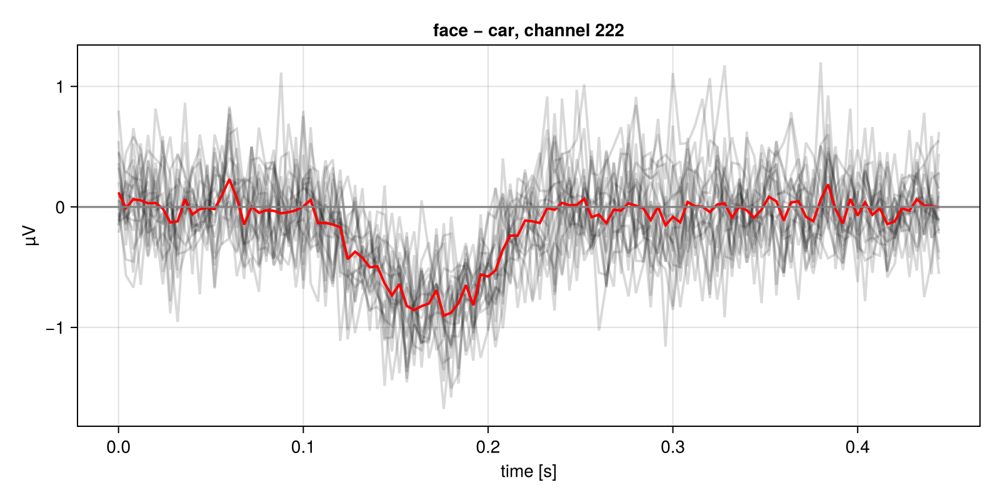
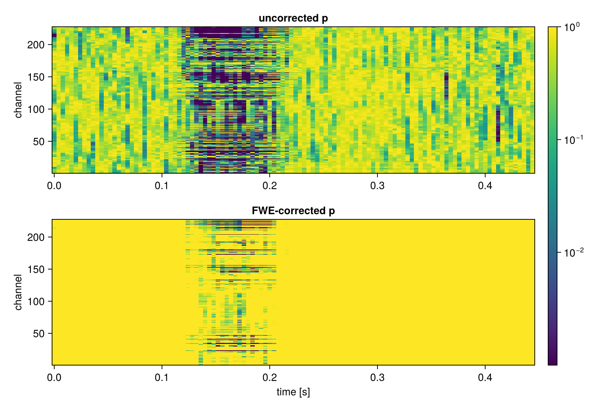
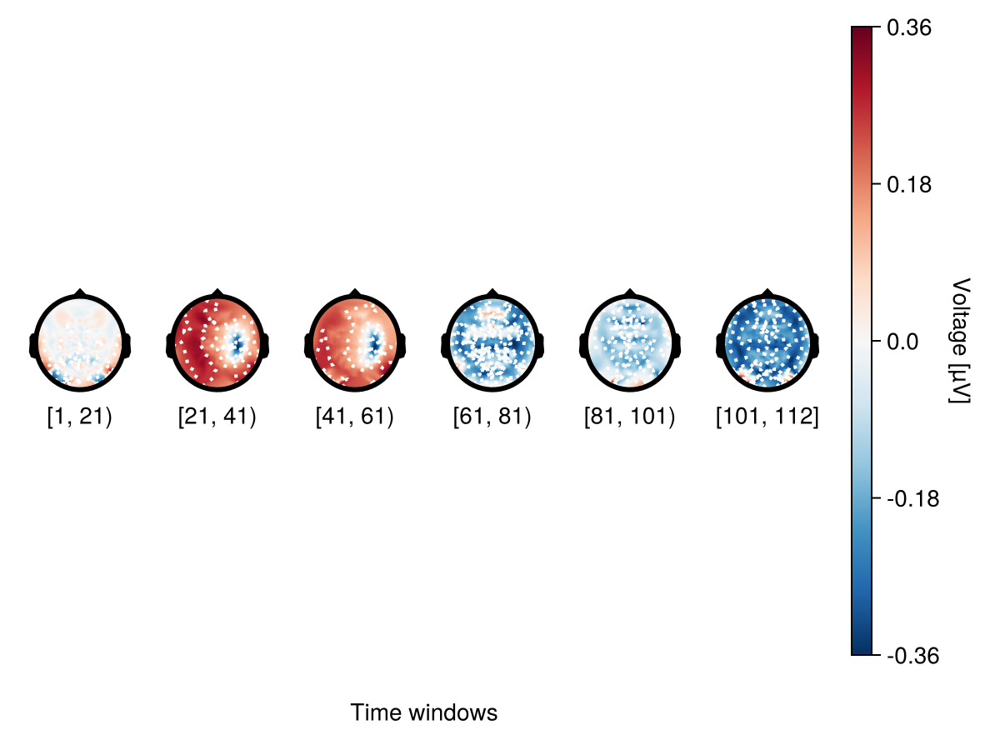
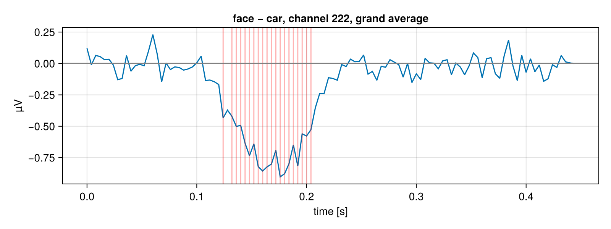

EEG example
This tutorial follows the workflow of the ClusterDepth.jl EEG tutorials: simulate an EEG experiment with UnfoldSim.jl, test an effect across subjects, correct for multiple comparisons, and plot. The difference is the correction: instead of the cluster-depth statistic, we use threshold-free cluster enhancement (TFCE; Smith & Nichols, 2009), which needs no cluster-forming threshold — the classic cluster-based permutation test's main arbitrary choice.
using ThresholdFreeClusterEnhancement
using CairoMakie
using UnfoldMakie
using UnfoldSim
using Random, Statistics, LinearAlgebra1. Simulating test data
We simulate a 1 × 2 design with 20 subjects, 40 items each, shown pictures of cars and faces. The ground truth contains a P1, an N170 and a P300 component — but a condition effect only on the N170: faces elicit a more negative N170 (β = 1.0). The HArtMuT head model (Harmening et al., 2022) projects each component to its 227 electrodes: we pick the cortical source closest to the component's typical location and use its leadfield as the projection. Red (i.e. temporally correlated) noise is added on top.
n_subjects = 20
sfreq = 250
headmodel_HArtMuT = Hartmut();
src_index(coord) = UnfoldSim.closest_src(coord, headmodel_HArtMuT.cortical["pos"])
projection(coord) = magnitude(headmodel_HArtMuT)[:, src_index(coord)]
design = MultiSubjectDesign(
n_subjects = n_subjects,
n_items = 40,
items_between = Dict(:condition => ["car", "face"]),
);
p1 = MixedModelComponent(;
basis = UnfoldSim.p100(; sfreq),
formula = @formula(0 ~ 1 + (1 | subject)),
β = [1.0],
σs = Dict(:subject => [1]),
);
n170 = MixedModelComponent(;
basis = UnfoldSim.n170(; sfreq),
formula = @formula(0 ~ 1 + condition + (1 + condition | subject)),
β = [1.0, 1.0], # condition effect: faces get a more negative N170
σs = Dict(:subject => [1, 0.2]),
);
p300 = MixedModelComponent(;
basis = UnfoldSim.p300(; sfreq),
formula = @formula(0 ~ 1 + condition + (1 + condition | subject)),
β = [1.0, 0], # no p300 condition effect
σs = Dict(:subject => [1, 1.0]), # ... but a random slope for condition
);
components = [
MultichannelComponent(p1, projection([0, -80, -10])), # occipital
MultichannelComponent(n170, projection([50, -40, -25])), # right occipito-temporal
MultichannelComponent(p300, projection([0, 5, 20])), # frontal-central
];
nothingPlease cite: HArtMuT: Harmening Nils, Klug Marius, Gramann Klaus and Miklody Daniel - 10.1088/1741-2552/aca8cedata, events = simulate(
MersenneTwister(1),
design,
components,
UniformOnset(; offset = 100, width = 50), # short ISI keeps the simulation light
RedNoise(noiselevel = 1);
return_epoched = true,
)
size(data) # channels × times × trials × subjects(227, 112, 40, 20)The epochs are 112 samples (≈ 0.45 s), the length of the longest basis function.
2. The test statistic: per-subject condition differences
The analysis question: do faces and cars differ at any (channel, time)? We average each subject's trials per condition and subtract — a face − car difference wave per subject, of shape channels × times × subjects:
n_channels, n_times = size(data, 1), size(data, 2)
is_face = events.condition .== "face"
is_car = events.condition .== "car"
subjects = unique(events.subject)
diff = Array{Float64}(undef, n_channels, n_times, n_subjects)
for (si, s) in enumerate(subjects)
m = events.subject .== s # this subject's rows in events
diff[:, :, si] = dropdims(
mean(data[:, :, is_face[m], si]; dims = 3) - mean(data[:, :, is_car[m], si]; dims = 3);
dims = 3,
)
end
times = range(0; step = 1 / sfreq, length = n_times)
nothingWhere does the N170 project strongest? On that channel:
n170_ch = argmax(abs.(projection([50, -40, -25])))
fig = Figure(size = (800, 400))
ax = Axis(fig[1, 1]; title = "face − car, channel $n170_ch",
xlabel = "time [s]", ylabel = "µV")
series!(ax, times, diff[n170_ch, :, :]'; solid_color = (:black, 0.15))
lines!(ax, times, mean(diff[n170_ch, :, :]; dims = 2)[:, 1]; color = :red, linewidth = 2)
hlines!(ax, [0]; color = :gray)
fig
For each of the 227 × 112 = 25 424 elements, the test statistic is the one-sample t of this difference across the 20 subjects — 25 424 tests on a 2-D map. Uncorrected at α = 0.05, chance alone would mark ~1270 of them.
3. The TFCE permutation test
TFCE needs the channel neighbourhood. Here we connect electrodes closer than 0.12 (in the head model's normalised units) — any symmetric AbstractMatrix with a zero diagonal works, so in a real analysis you could use the actual cap layout instead.
pos = headmodel_HArtMuT.electrodes["pos"]
adjacency = [i != j && norm(pos[i, :] - pos[j, :]) < 0.12
for i in 1:n_channels, j in 1:n_channels]
nothingOne call runs the whole test: per-element one-sample t across subjects → TFCE over the channel adjacency → sign-flip permutation null → p-value maps (permutation_test):
p_fwe, p_unc = permutation_test(diff, adjacency; E = 1, H = 2, nperm = 1000)
nothingIt returns two p-value maps, each channels × times:
p_fwe— familywise-error-corrected: each element's p-value comes from the null of the maximum TFCE score over the whole map.p_unc— uncorrected: each element's own permutation null.
E = 1, H = 2 is typical for sensor/time-course data (E = 0.5, H = 2 is the volumetric default). 1000 permutations of this problem size run in ~10 s.
4. Plotting
fig = Figure(size = (800, 550))
ax1 = Axis(fig[1, 1]; title = "uncorrected p", ylabel = "channel")
heatmap!(ax1, times, 1:n_channels, p_unc'; colorscale = log10, colorrange = (0.001, 1))
ax2 = Axis(fig[2, 1]; title = "FWE-corrected p", xlabel = "time [s]", ylabel = "channel")
hm = heatmap!(ax2, times, 1:n_channels, p_fwe'; colorscale = log10, colorrange = (0.001, 1))
Colorbar(fig[1:2, 2], hm)
fig
The uncorrected map lights up all over the noise — that is the ~5% false positive rate in action. The FWE map keeps the N170 time window and the spatial support that the adjacency connects. And note what we did not have to choose: no cluster-forming threshold, no time window, no channel subset.
The same result in space — the grand-average difference as a topoplot series:
positions = to_positions(pos')
df = UnfoldMakie.eeg_array_to_dataframe(mean(diff, dims = 3)[:, :, 1], string.(1:n_channels))
plot_topoplotseries(df; bin_width = 20, positions = positions,
rasterize_heatmaps = false, # shortcut: rasterize_heatmaps = true crashes on Makie ≥ 0.24.16, upgrade when UnfoldMakie fixes it
visual = (; enlarge = 1, label_scatter = false))
The N170 topography (right occipito-temporal negativity) pops out in the ≈ 84–244 ms bins — exactly where the FWE-corrected p-values survive.
Finally, mark where channel $n170_ch$ is significant on the grand-average difference wave:
fig = Figure(size = (800, 300))
ax = Axis(fig[1, 1]; title = "face − car, channel $n170_ch, grand average",
xlabel = "time [s]", ylabel = "µV")
lines!(ax, times, mean(diff[n170_ch, :, :]; dims = 2)[:, 1])
vlines!(ax, times[p_fwe[n170_ch, :] .< 0.05]; color = (:red, 0.3))
hlines!(ax, [0]; color = :gray)
fig
The significant window brackets the planted N170 peak at 170 ms — it extends a little beyond it, as a spatially-enhanced statistic tends to include the cluster's fringe.
Where to go next
- The Tutorial: what the
tfcetransform itself does to a map, with all keyword arguments. permutation_test: the test used here.method = :tail(the default) resolves p-values below the1/npermcounting floor;exact = trueenumerates all2ⁿsign patterns (for ≤ 20 subjects).- The ClusterDepth.jl tutorials for the same simulation analysed with the cluster-depth correction, and UnfoldSim.jl for richer simulations (power analysis, more designs, onsets).